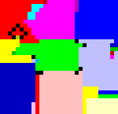

Esolangs (for “esoteric programming languages”) are a class of languages made for reasons other than practical use. Ben Olmstead (creator of Malbolge) describes them as “pushing the boundaries of programming, but not in useful directions.”
We might think of languages as being software-like themselves, but this is not quite right; they’re more immaterial than software. Languages are lists of rules about how to interpret combinations of symbols, that sometimes are used to write programs. They are more like a(n Oulipean) field of potential software; tools that can be used in infinite different ways but have their own logic of getting to that goal.
Geoff Cox, in his Speaking Code, looked at running code as performative. He sees it as a special type of performance, in that the machine always “performs” the same piece of code the same way: the speaking of the code and performance of it become flattened. This is opposed to work such as the Fluxus event scores, which leave room for interpretation. Yoko Ono’s Fly (with the single instruction “Fly”), evokes many different things, leaving nothing specific for the “performer” of the score — that performer might be a reader, for whom an imaginary performance is invoked, or perhaps someone actually trying to physically interpret it.
Esolangs, however, re-open this possibility in the score. Because they are open-ended systems, the writing of programs within the language becomes the space for this interpretation. They are experiential — you have to program in a language in order to understand it, it’s not something to be passively received. An esolang with no esoprogrammers is a sad thing, a score with no performer.

Hello, World in Piet
#include<stdio.h>
main()
{
printf("Hello World");
}
Hello, World in C
The Hello, World program is often used to introduce a new language. In David Morgan-Mar’s Piet, shown above, the source code for Hello World is an image structured by the logic of the language; the colors are placed there for a reason, just as the words appear in a certain order for the Hello, World example in C. This program is like a generative work where the list of rules is run on the programmer instead of the computer. It’s the programmer, trying to work within the rules of the language, who creates the piece. If we were to look at the output of these two programs, we could not easily tell the difference, they print “Hello, World!” to the screen equally well (apart from speed – esolangs are often not very efficient).
>25*"!dlrow ,olleH":v
v:,_@
> ^
Hello, World in Befunge
++++++++[>++++[>++>+++>+++>+<<<<-]>+>+>->>+[<]<-]>>.>---.+++++++..+++.>>.<-.<.+++.------.--------.>>+.>++.
Hello, World in brainfuck
Befunge and brainfuck, two of the foundational esolangs, are a bit harder to understand by just viewing source code – we can think of these as more like the type of Fluxus score mentioned above. The audience must actually write code in them for the weirdness and beauty of these languages to become clear.
Before we get too deep into comparisons with Fluxus, Oulipo, etc, it’s worth considering that esolangers did not necessarily view their work from an art perspective. Esolangers functioned in what Jon Cates would call an “expert community,” a group of hobbyists who collectively develop an aesthetic without the support of an institution. However, the conceptual complexity of the work should not be discounted. The overlap with art practice might be best understood by looking at how the creators themselves describe the concerns and aesthetics of their work.
HAICAN HAS STDIO?VISIBLE "HAI WORLD!"KTHXBYE
Hello, World in LOLcode
Chris Pressey is a central figure of esolangs; he ran the mailing list where the first community of esolangs came together. In The Aesthetics of Esolangs, he argues that esolangs can be understood as art, but not as a form of digital art: “they’re made up of concepts, and these concepts would exist even if our computing equipment wasn’t electronic, or wasn’t digital, or if we didn’t have computing equipment at all. It’s just that having computing equipment makes it a lot easier to design and experience these programming languages.” The rules are the work, and the fact that these rules produce runnable code is secondary. Pressey also underscores the sense of experience of the language as a world unto its creator. On the work of the eccentric esolanger zz038, he says: "looking at them” [zz038’s languages] “, you get a borderline-incoherent glimpse of an entire world that presumably exists inside his head that you will never fully appreciate.”
The esolanger ais523 made a similar point: “it’s much more interesting if the point of view of the language is one that you can think in independently.” ais523 singles out LOLcode (a language based on the lolcat meme of a few years back) as falling short. “I should also mention LOLcode, which has become pretty relevant as an esolang in the non-esolang community recently, much to the annoyance of most actual esolangers. It doesn’t have much intrinsic interest for most of the reasons people are interested in esolangs, being mostly a simple imperative language derivative with the keywords swapped out, just like there are a whole range of brainfuck derivatives too. However, it appeals for things like its visual appearance and general attitude, which although are IMO the least important aspect of an esolang, are one of the most immediately noticeable.”
In this blog, I hope to pay tribute to these languages and explore them as systems of thought. I see this blog as much a fanzine to esolangs as an art exploration, and hope to make the work accessible to folks with more limited technical backgrounds. I also hope it will help encourage others to design languages themselves. This is not necessarily a technical feat – after all, it’s the richness of the system that’s interesting, not the quality of its compiler.